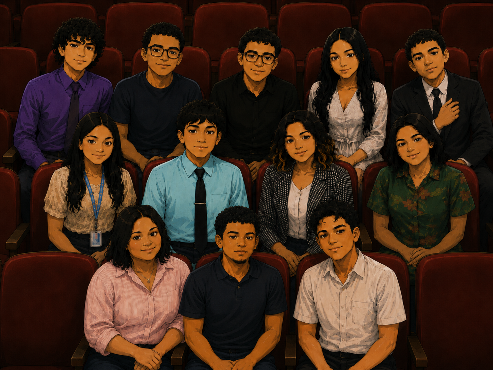
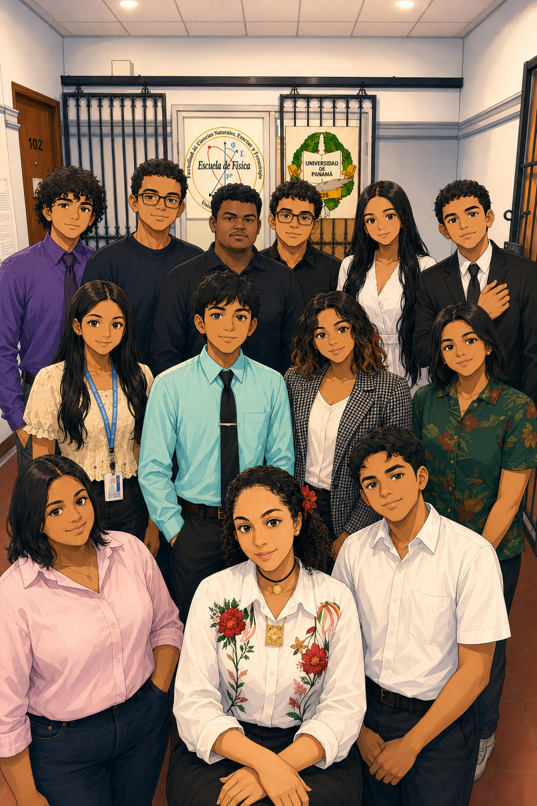
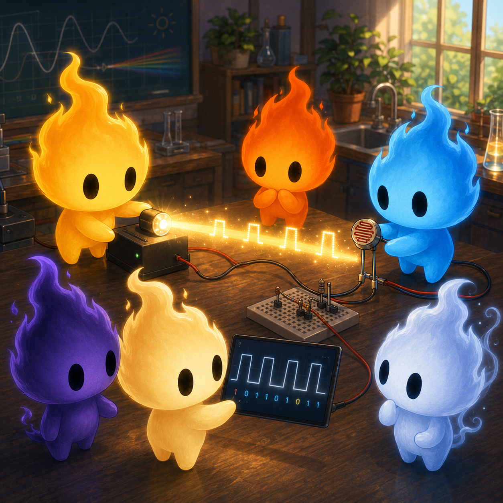
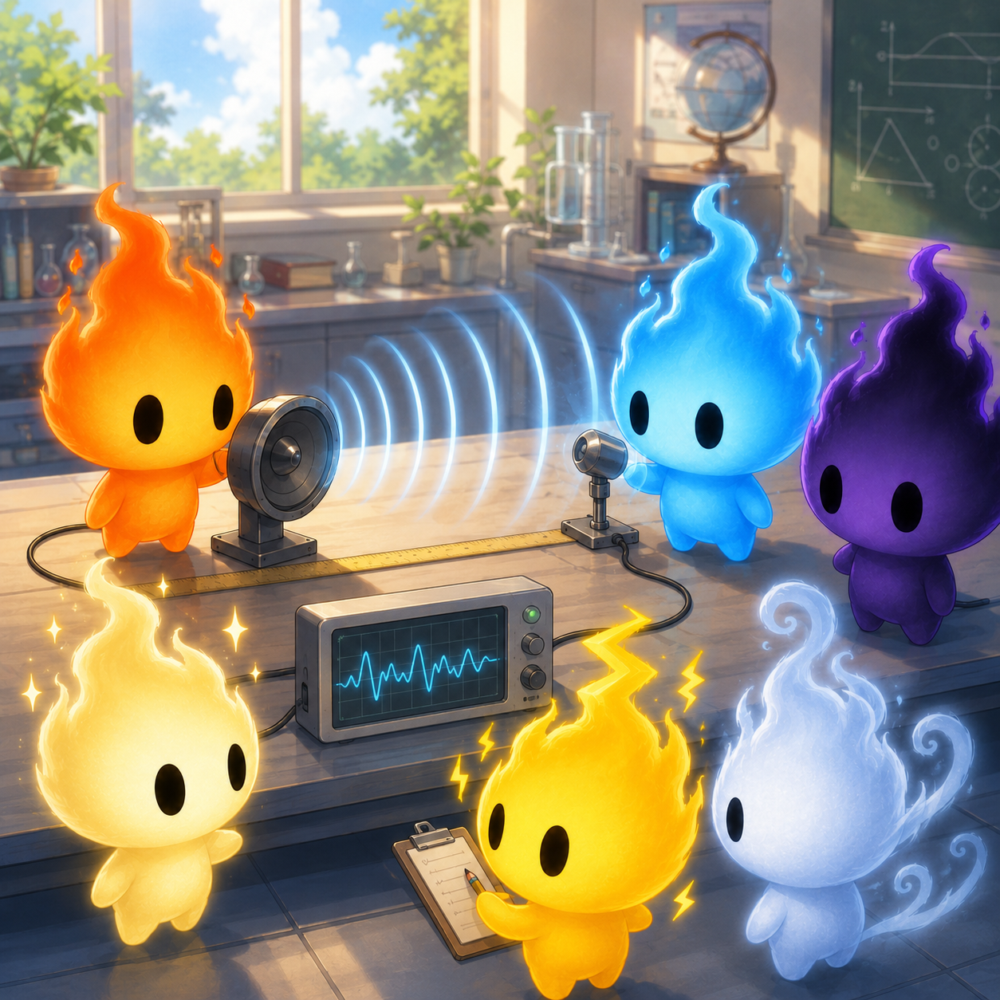
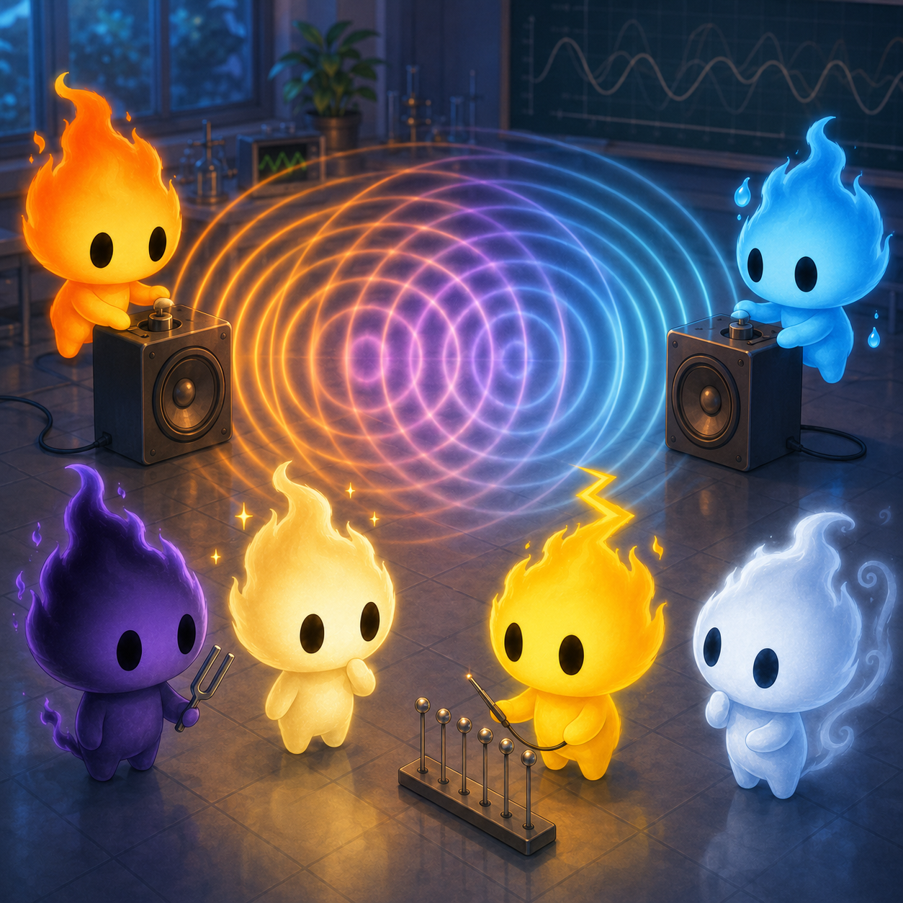
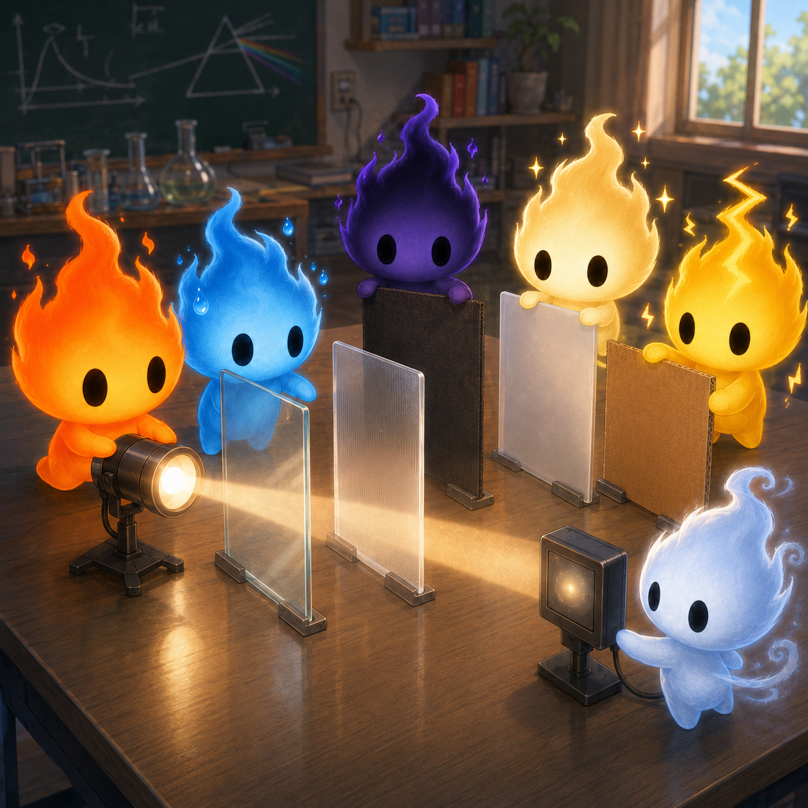
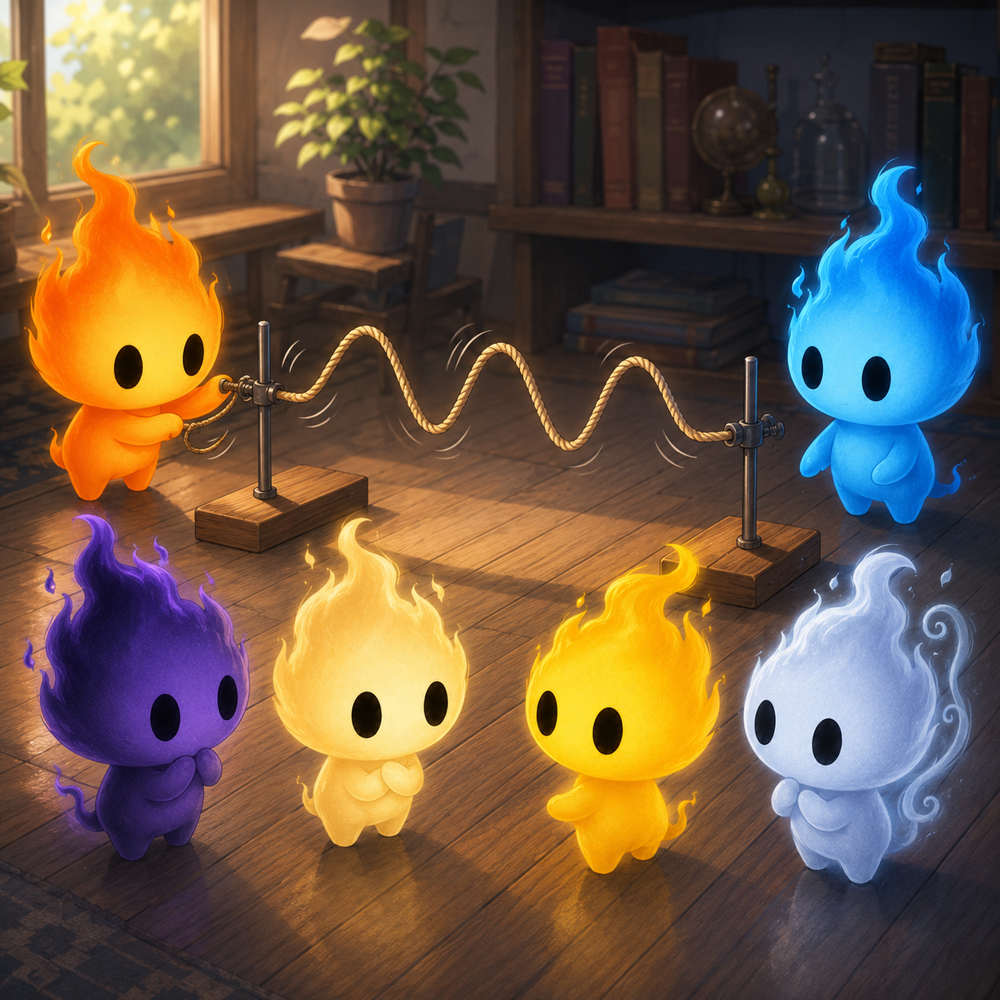
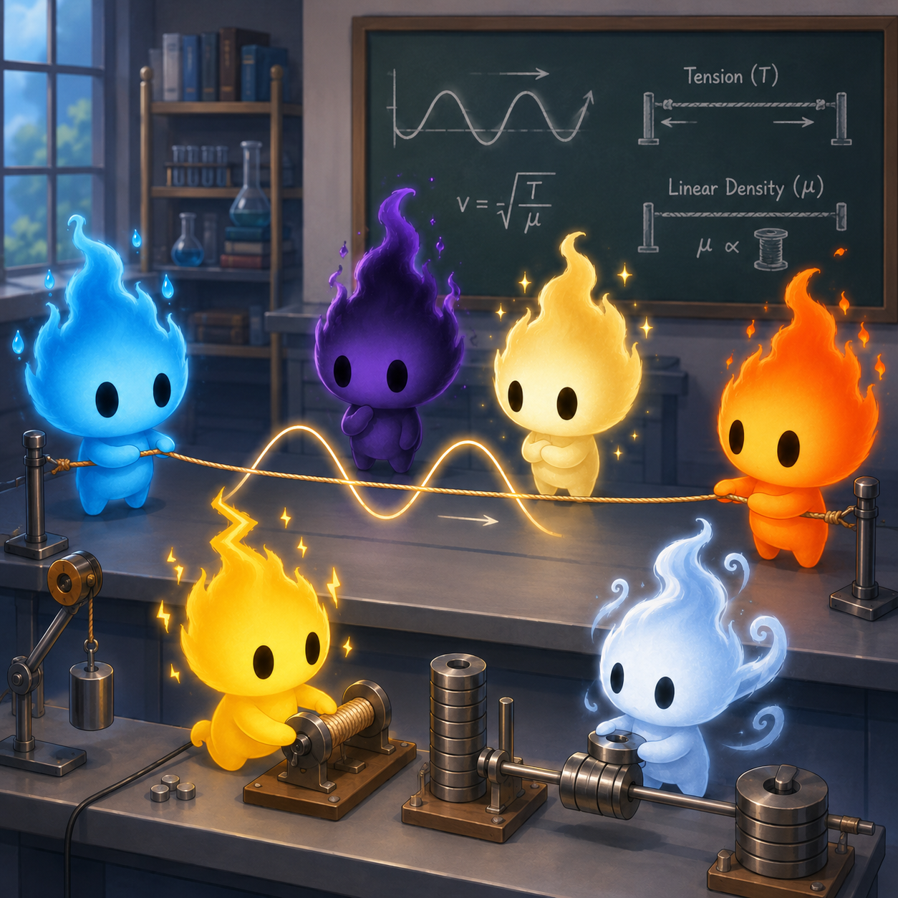

Hola, soy Luis


Acerca de nosotros
Somos un grupo de estudiantes que desarrolló simuladores como apoyo visual, con el propósito de mejorar la enseñanza y comprensión de las ondas, utilizándolos como herramienta introductoria a distintos temas.
Proyectos y laboratorio
Selecciona un simulador para observar, comparar y analizar diferentes fenómenos ondulatorios.

Luz visible y ondas electromagnéticas
Simula cómo la intensidad de la luz visible puede representar información transmitida por ondas electromagnéticas.
Abrir simulador
Velocidad del sonido en el aire
Permite explorar cómo se calcula la velocidad del sonido a partir del tiempo de propagación en el aire.
Abrir simulador
Interferencia de ondas sonoras
Muestra cómo se combinan dos ondas sonoras y cómo aparecen interferencias constructivas y destructivas.
Abrir simulador
Caracterización de iluminancia, transmitancia y absorbancia por distancia y materiales
Permite comparar cómo cambia la intensidad de la luz al modificar la distancia o colocar materiales en su trayectoria.
Abrir simulador
Ondas mecánicas experimentales
Simula ondas mecánicas para observar su frecuencia, amplitud y forma de propagación.
Abrir simulador
Propagación de ondas en cuerda
Simula la propagación de ondas en una cuerda y relaciona la velocidad con la tensión.
Abrir simulador